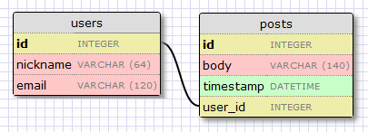
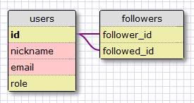

The Flask Mega-Tutorial, Part VIII: Followers, Contacts And Friends (2012)
Posted by
on under(Great news! There is a new version of this tutorial!)
This is the eighth article in the series in which I document my experience writing web applications in Python using the Flask microframework.
The goal of the tutorial series is to develop a decently featured microblogging application that demonstrating total lack of originality I have decided to call microblog.
NOTE: This article was revised in September 2014 to be in sync with current versions of Python and Flask.
Here is an index of all the articles in the series that have been published to date:
- Part I: Hello, World!
- Part II: Templates
- Part III: Web Forms
- Part IV: Database
- Part V: User Logins
- Part VI: Profile Page And Avatars
- Part VII: Unit Testing
- Part VIII: Followers, Contacts And Friends (this article)
- Part IX: Pagination
- Part X: Full Text Search
- Part XI: Email Support
- Part XII: Facelift
- Part XIII: Dates and Times
- Part XIV: I18n and L10n
- Part XV: Ajax
- Part XVI: Debugging, Testing and Profiling
- Part XVII: Deployment on Linux (even on the Raspberry Pi!)
- Part XVIII: Deployment on the Heroku Cloud
Recap
Our microblog application has been growing little by little, and by now we have touched on most of the topics that are required to complete the application.
Today we are going to work on our database some more. Each user of our application needs to be able to select which other users he or she wants to follow, so our database must be able to keep track of who is following who. All social applications have this feature in some form. Some call it Contacts, others Connections, Friends, Buddies or Followers. Other sites use this same idea to implement Allowed and Ignored user lists. We will call them Followers, but the implementation is the same regardless of the name.
Design of the 'Follower' feature
Before we start coding, let's think about the functionality that we want to obtain from this feature.
Let's start with the most obvious one. We want our users to easily maintain a list of followed people.
Looking at it from the other side, for each user we want to know the list of its followers.
We also want to have a way to query if a user is following or is followed by another user.
Users will click a "follow" link in the profile page of any other user to begin following that user. Likewise, they'll click a "unfollow" link to stop following a user.
The final requirement is that given a user we can easily query the database to obtain all the posts that belong to the followed users.
So, if you thought this was going to be a quick and easy article, think again!
Database relationships
We said we wanted to have all users to have "followed" and "followers" lists. Unfortunately, a relational database does not have a list type, all we have are tables with records and relationships between records.
We already have a table in our database to represent users, so what's left is to come up with the proper relationship type that can model the follower/followed link. This is a good time to review the three database relationship types:
One-to-many
We have already seen a one-to-many relationship in the previous database article. Here is the diagram:

The two entities associated with this relationship are users and posts. We say that a user has many posts, and a post has one user. The relationship is represented in the database with the use of a foreign key on the "many" side. In the above example the foreign key is the user_id field added to the posts table. This field links each post to the record of its author in the user table.
It is pretty clear that the user_id field provides direct access to the author of a given post, but what about the reverse? For the relationship to be useful we should be able to get the list of posts written by a given user. Turns out the user_id field in the posts table is enough to answer this question, as databases have indexes that allow for efficient queries such us "retrieve all posts that have a user_id of X".
Many-to-many
A many-to-many relationship is a bit more complex. As an example, consider a database that has students and teachers. We can say that a student has many teachers, and a teacher has many students. It's like two overlapped one-to-many relationships from both ends.
For a relationship of this type we should be able to query the database and obtain the list of teachers that teach a student, and the list of students in a teacher's class. Turns out this is pretty tricky to represent, it cannot be done by adding foreign keys to the existing tables.
The representation of a many-to-many relationship requires the use of an auxiliary table called an association table. Here is how the database would look for the students and teachers example:

While it may not seem straightforward, the association table with its two foreign keys is able to efficiently answer many types of queries, such as:
- Who are the teachers of student S?
- Who are the students of teacher T?
- How many students does teacher T have?
- How many teachers does student S have?
- Is teacher T teaching student S?
- Is student S in teacher T's class?
One-to-one
A one-to-one relationship is a special case of a one-to-many. The representation is similar, but a constrain is added to the database to prevent the "many" side to have more than one link.
While there are cases in which this type of relationship is useful, it isn't as common as the other two types, since any time one record in a table maps to one record in another table it can be argued that it may make sense for these two tables to be merged into one.
Representing followers and followed
From the above relationships we can easily determine that the proper data model is the many-to-many relationship, because a user follows many users, and a user has many followers. But there is a twist. We want to represent users following other users, so we just have users. So what should we use as the second entity of the many-to-many relationship?
Well, the second entity of the relationship is also the users. A relationship in which instances of an entity are linked to other instances of the same entity is called a self-referential relationship, and that is exactly what we need here.
Here is a diagram of our many-to-many relationship:

The followers table is our association table. The foreign keys are both pointing to the user table, since we are linking users to users. Each record in this table represents one link between a follower user and a followed user. Like the students and teachers example, a setup like this one allows our database to answer all the questions about followed and followers that we will need. Pretty neat.
Database model
The changes to our database model aren't that big. We start by adding the followers table (file app/models.py):
followers = db.Table('followers',
db.Column('follower_id', db.Integer, db.ForeignKey('user.id')),
db.Column('followed_id', db.Integer, db.ForeignKey('user.id'))
)
This is a direct translation of the association table from our diagram. Note that we are not declaring this table as a model like we did for users and posts. Since this is an auxiliary table that has no data other than the foreign keys, we use the lower level APIs in flask-sqlalchemy to create the table without an associated model.
Next we define the many-to-many relationship in the users table (file app/models.py):
class User(db.Model):
id = db.Column(db.Integer, primary_key=True)
nickname = db.Column(db.String(64), index=True, unique=True)
email = db.Column(db.String(120), index=True, unique=True)
posts = db.relationship('Post', backref='author', lazy='dynamic')
about_me = db.Column(db.String(140))
last_seen = db.Column(db.DateTime)
followed = db.relationship('User',
secondary=followers,
primaryjoin=(followers.c.follower_id == id),
secondaryjoin=(followers.c.followed_id == id),
backref=db.backref('followers', lazy='dynamic'),
lazy='dynamic')
The setup of the relationship is non-trivial and requires some explanation. Like we did for the one-to-many relationship in the previous article, we are using the db.relationship function to define the relationship. We will be linking User instances to other User instances, so as a convention let's say that for a pair of linked users in this relationship the left side user is following the right side user. We define the relationship as seen from the left side entity with the name followed, because when we query this relationship from the left side we will get the list of followed users. Let's examine all the arguments to the db.relationship() call one by one:
'User'is the right side entity that is in this relationship (the left side entity is the parent class). Since we are defining a self-referential relationship we use the same class on both sides.secondaryindicates the association table that is used for this relationship.primaryjoinindicates the condition that links the left side entity (the follower user) with the association table. Note that because thefollowerstable is not a model there is a slightly odd syntax required to get to the field name.secondaryjoinindicates the condition that links the right side entity (the followed user) with the association table.backrefdefines how this relationship will be accessed from the right side entity. We said that for a given user the query namedfollowedreturns all the right side users that have the target user on the left side. The back reference will be calledfollowersand will return all the left side users that are linked to the target user in the right side. The additionallazyargument indicates the execution mode for this query. A mode ofdynamicsets up the query to not run until specifically requested. This is useful for performance reasons, and also because we will be able to take this query and modify it before it executes. More about this later.lazyis similar to the parameter of the same name in thebackref, but this one applies to the regular query instead of the back reference.
Don't despair if this is hard to understand. We will see how to use these queries in a moment, and then everything will become clearer.
Since we have made updates to the database, we now have to generate a new migration:
$ ./db_migrate.py
And with this we have completed the database changes. But we have quite a bit of coding left to do.
Adding and removing 'follows'
To promote reusability, we will implement the follow and unfollow functionality in the User model instead of doing it directly in view functions. That way we can use this feature for the actual application (invoking it from the view functions) and also from our unit testing framework. As a matter of principle, it is always best to move the logic of our application away from view functions and into models, because that simplifies the testing. You want to have your view functions be as simple as possible, because those are harder to test in an automated way.
Below is the code to add and remove relationships, defined as methods of the User model (file app/models.py):
class User(db.Model):
#...
def follow(self, user):
if not self.is_following(user):
self.followed.append(user)
return self
def unfollow(self, user):
if self.is_following(user):
self.followed.remove(user)
return self
def is_following(self, user):
return self.followed.filter(followers.c.followed_id == user.id).count() > 0
These methods are amazingly simple, thanks to the power of sqlalchemy who does most of the work. We just add or remove items from the followed relationship and sqlalchemy takes care of managing the association table for us.
The follow and unfollow methods are defined so that they return an object when they succeed or None when they fail. When an object is returned, this object has to be added to the database session and committed.
The is_following method does a lot in its single line of code. We are taking the followed relationship query, which returns all the (follower, followed) pairs that have our user as the follower, and we filter it by the followed user. This is possible because the followed relationship has a lazy mode of dynamic, so instead of being the result of the query, this is the actual query object, before execution.
The return from the filter call is the modified query, still without having executed. So we then call count() on this query, and now the query will execute and return the number of records found. If we get one, then we know a link between these two uses is already present. If we get none then we know a link does not exist.
Testing
Let's write a test for our unit testing framework that exercises all that we have built so far (file tests.py):
class TestCase(unittest.TestCase):
#...
def test_follow(self):
u1 = User(nickname='john', email='john@example.com')
u2 = User(nickname='susan', email='susan@example.com')
db.session.add(u1)
db.session.add(u2)
db.session.commit()
assert u1.unfollow(u2) is None
u = u1.follow(u2)
db.session.add(u)
db.session.commit()
assert u1.follow(u2) is None
assert u1.is_following(u2)
assert u1.followed.count() == 1
assert u1.followed.first().nickname == 'susan'
assert u2.followers.count() == 1
assert u2.followers.first().nickname == 'john'
u = u1.unfollow(u2)
assert u is not None
db.session.add(u)
db.session.commit()
assert not u1.is_following(u2)
assert u1.followed.count() == 0
assert u2.followers.count() == 0
After adding this test to the testing framework we can run the entire test suite with the following command:
./tests.py
And if everything works it should say that all our tests pass.
Database queries
Our current database model supports most of the requirements we listed at the start. The one we are missing is, in fact, the hardest. Our index page will show the posts written by all the people that are followed by the logged in user, so we need a query that returns all these posts.
The most obvious solution is to run a query that gives us the list of followed users, which we can already do. Then for each of these returned users we run a query to get the posts. Once we have all the posts we merge them into a single list and sort them by date. Sounds good? Well, not really.
This approach has a couple of problems. What happens if a user is following a thousand people? We need to execute a thousand database queries just to collect all the posts. And now we have the thousand lists in memory that we need to merge and sort. As a secondary problem, consider that our index page will (eventually) have pagination implemented, so we will not display all the available posts but just the first, say, fifty, with links to get the next or previous set of fifty. If we are going to display posts sorted by their date, how can we know which posts are the most recent fifty of all followed users combined, unless we get all the posts and sort them first? This is actually an awful solution that does not scale well.
While this collecting and sorting work needs to be done somehow, us doing it results in a very inefficient process. This kind of work is what relational databases excel at. The database has indexes that allow it to perform the queries and the sorting in a much more efficient way that we can possibly do from our side.
So what we really want is to come up with a single database query that expresses what information we want to get, and then we let the database figure out what is the most efficient way to obtain the data for us.
To end the mystery, here is the query that achieves this. Unfortunately it is yet another heavily loaded one liner that we will add to the User model (file app/models.py):
class User(db.Model):
#...
def followed_posts(self):
return Post.query.join(followers, (followers.c.followed_id == Post.user_id)).filter(followers.c.follower_id == self.id).order_by(Post.timestamp.desc())
Let's try to decipher this query one piece at a time. There are three parts: the join, the filter and the order_by.
Joins
To understand what a join operation does, let's look at an example. Let's assume we have a User table with the following contents:
| User | |
|---|---|
| id | nickname |
| 1 | john |
| 2 | susan |
| 3 | mary |
| 4 | david |
There are some extra fields in the table that are not shown above just to simplify the example.
Let's say that our followers association table says that user "john" is following users "susan" and "david", user "susan" is following "mary" and user "mary" is following "david". The data that represents the above is this:
| followers | |
|---|---|
| follower_id | followed_id |
| 1 | 2 |
| 1 | 4 |
| 2 | 3 |
| 3 | 4 |
And finally, our Post table contains one post from each user:
| Post | ||
|---|---|---|
| id | text | user_id |
| 1 | post from susan | 2 |
| 2 | post from mary | 3 |
| 3 | post from david | 4 |
| 4 | post from john | 1 |
Here again there are some fields that are omitted to keep the example simple.
Below is the join portion of our query, isolated from the rest of the query:
Post.query.join(followers,
(followers.c.followed_id == Post.user_id))
The join operation is called on the Post table. There are two arguments, the first is another table, our followers table. The second argument to the join call is the join condition.
What the join operation will do with all this is create a temporary new table with data from the Post and followers table, merged according to the given condition.
In this example we want the field followed_id of the followers table to match the user_id field of the Post table.
To perform this merge, we take each record from the Post table (the left side of the join) and append the fields from the records in the followers table (the right side of the join) that match the condition. If there is no match, then that post record is removed.
The result of the join in our example results in this temporary table:
| Post | followers | |||
|---|---|---|---|---|
| id | text | user_id | follower_id | followed_id |
| 1 | post from susan | 2 | 1 | 2 |
| 2 | post from mary | 3 | 2 | 3 |
| 3 | post from david | 4 | 1 | 4 |
| 3 | post from david | 4 | 3 | 4 |
Note how the post with user_id=1 was removed from the join, because there is no record in the followers table that has a followed_id=1. Also note how the post with user_id=4 appears twice, because the followers table has two entries with a followed_id=4.
Filters
The join operation gave us a list of posts that are followed by someone, without specifying who is the follower. We are only interested in a subset of this list, we need just the posts that are followed by one specific user.
So we will filter this table by the follower user. The filter portion of the query then is:
filter(followers.c.follower_id == self.id)
Remember that the query is executed in the context of our target user, because it is a method in the User class, so self.id in this context is the id of the user we are interested in. With this filter we are telling the database that we want to keep just the records from the joined table that have our user as a follower. So following our example, if the user we are asking about is the one with id=1, then we would end up with yet another temporary table:
| Post | followers | |||
|---|---|---|---|---|
| id | text | user_id | follower_id | followed_id |
| 1 | post from susan | 2 | 1 | 2 |
| 3 | post from david | 4 | 1 | 4 |
And these are exactly the posts that we want!
Remember that the query was issued on the Post class, so even though we ended up with a temporary table that does not match any of our models, the result will be the posts that are included in this temporary table, without the extra columns added by the join operation.
Sorting
The final step of the process is to sort the results according to our criteria. The portion of the query that does that says:
order_by(Post.timestamp.desc())
Here we are saying that the results should be sorted by the timestamp field in descending order, so that the first result will be the most recent post.
There is only one more minor detail that we can add to improve our query. When users read their followed posts they will probably want to see their own posts inserted in the stream as well, so it would be nice to have those included in the query results.
And turns out there is a very simple way to achieve this that doesn't require any changes! We will just make sure that each user is added as a follower of him/herself in the database, and that will take care of this little problem for us.
To conclude our long discussion on queries, let's write a unit test for our query (file tests.py):
#...
from datetime import datetime, timedelta
from app.models import User, Post
#...
class TestCase(unittest.TestCase):
#...
def test_follow_posts(self):
# make four users
u1 = User(nickname='john', email='john@example.com')
u2 = User(nickname='susan', email='susan@example.com')
u3 = User(nickname='mary', email='mary@example.com')
u4 = User(nickname='david', email='david@example.com')
db.session.add(u1)
db.session.add(u2)
db.session.add(u3)
db.session.add(u4)
# make four posts
utcnow = datetime.utcnow()
p1 = Post(body="post from john", author=u1, timestamp=utcnow + timedelta(seconds=1))
p2 = Post(body="post from susan", author=u2, timestamp=utcnow + timedelta(seconds=2))
p3 = Post(body="post from mary", author=u3, timestamp=utcnow + timedelta(seconds=3))
p4 = Post(body="post from david", author=u4, timestamp=utcnow + timedelta(seconds=4))
db.session.add(p1)
db.session.add(p2)
db.session.add(p3)
db.session.add(p4)
db.session.commit()
# setup the followers
u1.follow(u1) # john follows himself
u1.follow(u2) # john follows susan
u1.follow(u4) # john follows david
u2.follow(u2) # susan follows herself
u2.follow(u3) # susan follows mary
u3.follow(u3) # mary follows herself
u3.follow(u4) # mary follows david
u4.follow(u4) # david follows himself
db.session.add(u1)
db.session.add(u2)
db.session.add(u3)
db.session.add(u4)
db.session.commit()
# check the followed posts of each user
f1 = u1.followed_posts().all()
f2 = u2.followed_posts().all()
f3 = u3.followed_posts().all()
f4 = u4.followed_posts().all()
assert len(f1) == 3
assert len(f2) == 2
assert len(f3) == 2
assert len(f4) == 1
assert f1 == [p4, p2, p1]
assert f2 == [p3, p2]
assert f3 == [p4, p3]
assert f4 == [p4]
This test has a lot of setup code but the actual test is pretty short. We first check that the number of followed posts returned for each user is the expected one. Then for each user we check that the correct posts were returned and that they came in the correct order (note that we inserted the posts with timestamps that are guaranteed to always order in the same way).
Note the usage of the followed_posts() method. This method returns a query object, not the results. This is similar to how relationships with lazy = 'dynamic' work. It is always a good idea to return query objects instead of results, because that gives the caller the choice of adding more clauses to the query before it is executed.
There are several methods in the query object that trigger the query execution. We've seen that count() runs the query and returns the number of results (throwing the actual results away). We have also used first() to return the first result and throw away the rest, if any. In this test we are using the all() method to get an array with all the results.
Possible improvements
We now have implemented all the required features of our 'follower' feature, but there are ways to improve our design and make it more flexible.
All the social networks that we love to hate support similar ways to connect users, but they have more options to control the sharing of information.
For example, we have not elected to support the ability to block users. This would add one more layer of complexity to our queries, since now we not only need to grab the posts of the users we follow, but we need to filter out those from users that decided to block us. How would you implement this? Simple, one more many-to-many self-referential relationship to record who's blocking who, and one more join+filter in the query that returns the followed posts.
Another popular feature in social networks is the ability to group followers into custom lists, and then sharing content only with specific groups. This is also implemented with additional relationships and added complexity to the queries.
We will not have these features in microblog, but if there is enough interest I would be happy to write an article on the topic. Let me know in the comments!
Tying up loose ends
We have made an impressive amount of progress today. But while we have solved all the problems related to database setup and querying, we have not enabled the new functionality through our application.
Luckily for us, there aren't any challenges in doing this. We just need to fix view functions and templates to call the new methods in the User model when appropriate. So let's do that before we close this session.
Being your own follower
We decided that we were going to mark all users as followers of themselves, so that they can see their own posts in their post stream.
We are going to do that at the point where users are getting their accounts setup, in the after_login handler for OpenID (file 'app/views.py'):
@oid.after_login
def after_login(resp):
if resp.email is None or resp.email == "":
flash('Invalid login. Please try again.')
return redirect(url_for('login'))
user = User.query.filter_by(email=resp.email).first()
if user is None:
nickname = resp.nickname
if nickname is None or nickname == "":
nickname = resp.email.split('@')[0]
nickname = User.make_unique_nickname(nickname)
user = User(nickname=nickname, email=resp.email)
db.session.add(user)
db.session.commit()
# make the user follow him/herself
db.session.add(user.follow(user))
db.session.commit()
remember_me = False
if 'remember_me' in session:
remember_me = session['remember_me']
session.pop('remember_me', None)
login_user(user, remember=remember_me)
return redirect(request.args.get('next') or url_for('index'))
Follow and Unfollow links
Next, we will define view functions that follow and unfollow a user (file app/views.py):
@app.route('/follow/<nickname>')
@login_required
def follow(nickname):
user = User.query.filter_by(nickname=nickname).first()
if user is None:
flash('User %s not found.' % nickname)
return redirect(url_for('index'))
if user == g.user:
flash('You can\'t follow yourself!')
return redirect(url_for('user', nickname=nickname))
u = g.user.follow(user)
if u is None:
flash('Cannot follow ' + nickname + '.')
return redirect(url_for('user', nickname=nickname))
db.session.add(u)
db.session.commit()
flash('You are now following ' + nickname + '!')
return redirect(url_for('user', nickname=nickname))
@app.route('/unfollow/<nickname>')
@login_required
def unfollow(nickname):
user = User.query.filter_by(nickname=nickname).first()
if user is None:
flash('User %s not found.' % nickname)
return redirect(url_for('index'))
if user == g.user:
flash('You can\'t unfollow yourself!')
return redirect(url_for('user', nickname=nickname))
u = g.user.unfollow(user)
if u is None:
flash('Cannot unfollow ' + nickname + '.')
return redirect(url_for('user', nickname=nickname))
db.session.add(u)
db.session.commit()
flash('You have stopped following ' + nickname + '.')
return redirect(url_for('user', nickname=nickname))
These should be self-explanatory, but note how there is error checking all around, to prevent unexpected problems and try to provide a message to the user and a redirection when a problem has occurred.
Now we have the view functions, so we can hook them up. The links to follow and unfollow a user will appear in the profile page of each user (file app/templates/user.html):
<!-- extend base layout -->
{% extends "base.html" %}
{% block content %}
<table>
<tr valign="top">
<td><img src="{{ user.avatar(128) }}"></td>
<td>
<h1>User: {{ user.nickname }}</h1>
{% if user.about_me %}<p>{{ user.about_me }}</p>{% endif %}
{% if user.last_seen %}<p><i>Last seen on: {{ user.last_seen }}</i></p>{% endif %}
<p>{{ user.followers.count() }} followers |
{% if user.id == g.user.id %}
<a href="{{ url_for('edit') }}">Edit your profile</a>
{% elif not g.user.is_following(user) %}
<a href="{{ url_for('follow', nickname=user.nickname) }}">Follow</a>
{% else %}
<a href="{{ url_for('unfollow', nickname=user.nickname) }}">Unfollow</a>
{% endif %}
</p>
</td>
</tr>
</table>
<hr>
{% for post in posts %}
{% include 'post.html' %}
{% endfor %}
{% endblock %}
In the line we had the "Edit" link we now show the number of followers the user has, followed by one of three possible links:
- if the user profile belongs to the logged in user, then the "Edit" link shows.
- else, if the user is not currently followed a "Follow" link shows.
- else, a "Unfollow" link shows.
At this point you can run the application, create a few users by logging in with different OpenID accounts and play with following and unfollowing users.
All that is left is to show posts of the followed users in the index page, but we are still missing an important piece of the puzzle before we can do that, so this will have to wait until the next chapter.
Final words
We have implemented a core piece of our application today. The topic of database relationships and queries is a pretty complex one, so if there are any questions about the material presented above you are welcome to send your questions in the comments below.
In the next installment we will be looking at the fascinating world of pagination, and we will be finally hooking up posts from the database to our application.
For those of you that are lazy typists (or lazy copy-pasters), below is the updated microblog application:
Download microblog-0.8.zip.
As always, the above zip file does not include a database or the flask virtual environment. Previous articles explain how to regenerate these.
Thanks again for following my tutorial. See you next time!
Miguel
Become a Patron!
Hello, and thank you for visiting my blog! If you enjoyed this article, please consider supporting my work on this blog on Patreon!

-
#26 Miguel Grinberg said
@Manuel: for the intersection of the users followed by two different users you can use "user1.followed.intersect(user2.followed)". If you want the union of the followed users then use "user1.followed.union(user2.followed)".
-
#27 Adam said
Hi sh4nks,
I'm not Miguel, but I can answer that for you, the "c" is shorthand for "columns". The SQLAlchemy has some detail on this:
http://docs.sqlalchemy.org/en/rel_0_7/core/schema.html#accessing-tables-and-columnsSo, for example, with "followers.c.followed_id" it's effectively saying give me the followed_id column from the followers table.
Hope that helps.
-
#28 Aaron said
Hey Miguel,
This has been a great tutorial so far. I got all the way to the end of this page and all of a sudden I'm getting:
AttributeError
AttributeError: 'CodeGenerator' object has no attribute 'tests.py'and a 500 error
Any thoughts why this might be taking place?
-
#29 Miguel Grinberg said
@Aaron: put the stack trace somewhere I can see it (like pastebin or similar). As you will see in a future article, the stack trace of the error is one of the most valuable tools to understand what's going on.
-
#30 George Mabley said
I came back here to reference something and saw what you said about intersection and union. I added it to my previously mentioned 'like' feature, but would like to take it a step further. I would like a way for users to find every other user who has similar likes, and maybe even sort it by the amount they have in common. Here is what I am working with: http://pastebin.com/ESDxDcLz . I don't know of a way to call similar_artists() on every user in the database, or at least in a way that would return it in a list which could be displayed nicely. I could be approaching this in the wrong way entirely, too.
-
#31 Miguel Grinberg said
@George: the problem you are trying to solve is extremely difficult, I don't think you can come up with a single database query that can answer questions of the type "if I like these artists, then I may get along well with these other users" or "If I like these artists, then I may like these other artists". The field that studies these type of problems is called "collaborative filtering". These algorithms don't scale well, as your users and artists increase in number the size of your queries grows exponentially. You may want to consider having these calculations done offline in the background and saved to a table that you can then query. The data in this table can be updated at night or maybe a background low priority job can be constantly calculating these lists for all users and updating them in the database.
-
#32 Jon said
You still have a bug in your code, which I just discovered when trying to test this section. If the openID doesn't have an email (no email required at the openID site), several problems are generated when trying to add the nickname and email, since the resp.email returns none. Also, when trying to log in a second time with the same openID and no email, a new user is generated each time.
-
#33 Miguel Grinberg said
@Jon: there's been some discussion about this issue in the comments of an earlier article. The solution is to reject any OpenID logins that don't provide an email, and I believe current code rejects any such logins. What problems do you see?
-
#34 Jude said
Hey, thanks for you great job! Could have a new article about the complex queries in the real world as you mentioned in the chapter "Possible improvements"? That will help a lot.
-
#35 azed said
HI Miguel
I'm having a problem with the unit testing on this page. The test_follow_posts(). When i first read this part, it worked fine but right now, assert len(f1) == 3 fails. In fact the whole assert len(fn) fails but the code works very well.
When i say code works very well, i mean from the browser. I can see the posts of people i follow. I've downloaded your own code and i still get the same error.
I tried doing the test from the CLI manually and when i print f1, the result is 3 but the test fails and i don't know why.
Any ideas? -
#36 Miguel Grinberg said
@azed: how does the test fail? Do you have a stack trace?
-
#37 azed said
FAIL: test_follow_posts (main.TestCase)
Traceback (most recent call last):
File "tests.py", line 107, in test_follow_posts
assert len(f1) == 3
AssertionErrorRan 4 tests in 1.015s
FAILED (failures=1) -
#38 Miguel Grinberg said
@azed: could you print f1 and len(f1) before the assert and tell me what you get?
-
#39 azed said
It prints the contents of app.db
-
#40 Alex Zhang said
Hey,Miguel!Thanks for your Tutorial.But i have a question in part of "Joins"：In last row of temporary table,whether the value of follower_id should be "3",not "2"? Look forward your reply,thanks!
-
#41 Miguel Grinberg said
@Alex: good catch, you are correct, I have updated the table above. Thanks!
-
#42 Andy said
I know it's been posted a while ago, but I only found this great tutorial yet. However, I think I might have stumbled upon a bug.
In the after_login function there is this part where a user follows himself:
db.session.add(user.follow(user)). Thefollowfunction requires the user to have an id. Because, following is handled by id. However, the id is only added to the user instance by the database when the user is added. Hence, at this stage the user doesn't have an id yet. For me that caused the page to produce an exception and throw me into the very nice flask debugger view. My fix to this was to follow after adding. Iedb.session.add(user); user.follow(user). This way it works and my own posts are listed on the index page after following the next chapter of this series. If this is a true bug, this description is likely hidden somewhere in these comments. Otherwise, I might be doing something else wrong.Thanks for this great series on Flask. I'm really enjoying it.
-
#43 Miguel Grinberg said
@Andy: if you look at that sentence in context you will see that the user was added and committed right above. Any chance you missed a line or two in your version?
-
#44 Gabriel said
Hi, I am following your tutorial... Great material. But I didn't understand very well why did you created the followers table this way (followers = db.Table) and didn't create a class for it. Wouldn't be better if you had created a class Followers with follow and unfollow(user, user) methods?
Thanks!
-
#45 Miguel Grinberg said
@Gabriel: the followers table is not a normal table, it is an auxiliary table that supports a many-to-many relationship between users and their followers. It isn't created as a regular model because we do not need to manage this table, sqlalchemy automatically adds and removes records from this table as needed.
-
#46 Jordan said
Hey Miguel, hope your day is going well. Thanks for answering my question yesterday... I've got two more quick ones for you.
-
What's going on in the primaryjoin and secondaryjoin condtions? If primaryjoin is responsible for linking the left-hand user to the association table, and as a condition, first asks if the id in the association table is equal to the id of the user, wouldn't that condition always return False?
-
Just to make sure I understand the order of events, when you call your follow(self, user) method, the self becomes the left-hand user and the user argument becomes the right hand user which are then sorted into our table with the help of primaryjoin (deals only with self user) and secondaryjoin (deals only with other users)?
Thanks for the help so far - looking forward to getting through this especially difficult chapter.
-
-
#47 Miguel Grinberg said
@Jordan: (1) the association table does not have ids of its own, it just has the ids of the left and right side users. (2) yes, self is the follower, the user given as argument is the followed. The association table keeps pairs of (follower, followed).
-
#48 sh4nks said
it's the best tutorial i've found about flask. thank you !
-
#49 PSL said
Should the follow and unfollow routes be protected by @login_required?
-
#50 Miguel Grinberg said
@PSL: Yes. The code does it, but I missed that in the code shown in the article. I have made the correction. Thanks!